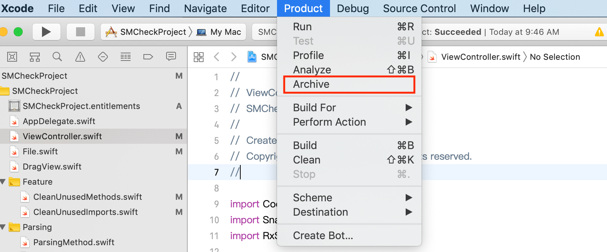
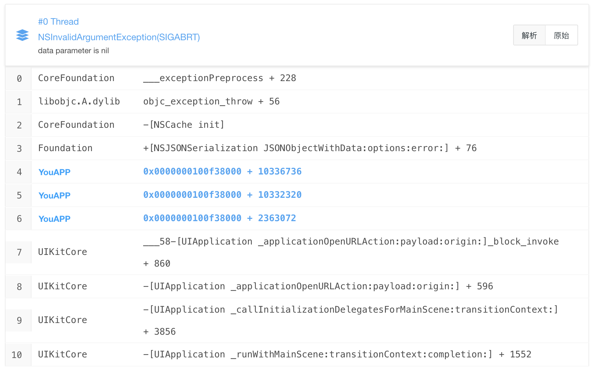
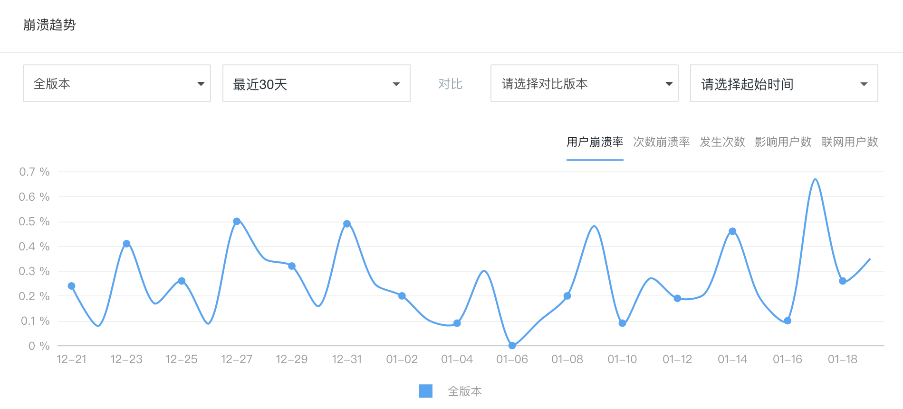
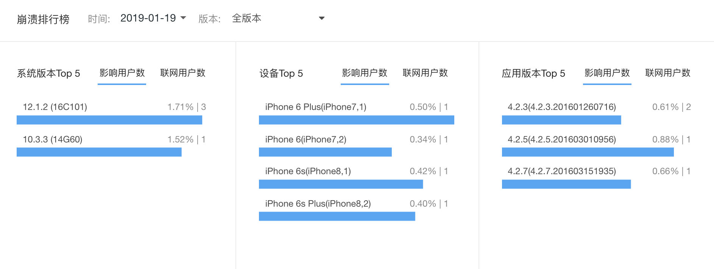
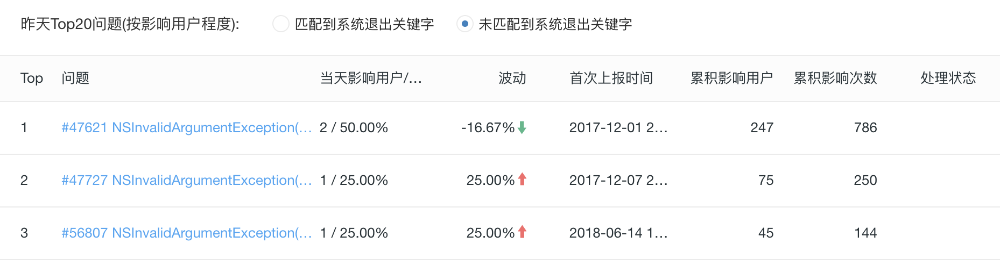

- 00 开篇词 锚定一个点，然后在这个点上深耕.md.html
- 01 建立你自己的iOS开发知识体系.md.html
- 02 App 启动速度怎么做优化与监控？.md.html
- 03 Auto Layout 是怎么进行自动布局的，性能如何？.md.html
- 04 项目大了人员多了，架构怎么设计更合理？.md.html
- 05 链接器：符号是怎么绑定到地址上的？.md.html
- 06 App 如何通过注入动态库的方式实现极速编译调试？.md.html
- 07 Clang、Infer 和 OCLint ，我们应该使用谁来做静态分析？.md.html
- 08 如何利用 Clang 为 App 提质？.md.html
- 09 无侵入的埋点方案如何实现？.md.html
- 10 包大小：如何从资源和代码层面实现全方位瘦身？.md.html
- 11 热点问题答疑（一）：基础模块问题答疑.md.html
- 12 iOS 崩溃千奇百怪，如何全面监控？.md.html
- 13 如何利用 RunLoop 原理去监控卡顿？.md.html
- 14 临近 OOM，如何获取详细内存分配信息，分析内存问题？.md.html
- 15 日志监控：怎样获取 App 中的全量日志？.md.html
- 16 性能监控：衡量 App 质量的那把尺.md.html
- 17 远超你想象的多线程的那些坑.md.html
- 18 怎么减少 App 电量消耗？.md.html
- 19 热点问题答疑（二）：基础模块问题答疑.md.html
- 20 iOS开发的最佳学习路径是什么？.md.html
- 21 除了 Cocoa，iOS还可以用哪些 GUI 框架开发？.md.html
- 22 细说 iOS 响应式框架变迁，哪些思想可以为我所用？.md.html
- 23 如何构造酷炫的物理效果和过场动画效果？.md.html
- 24 A_B 测试：验证决策效果的利器.md.html
- 25 怎样构建底层的发布和订阅事件总线？.md.html
- 26 如何提高 JSON 解析的性能？.md.html
- 27 如何用 Flexbox 思路开发？跟自动布局比，Flexbox 好在哪？.md.html
- 28 怎么应对各种富文本表现需求？.md.html
- 29 如何在 iOS 中进行面向测试驱动开发和面向行为驱动开发？.md.html
- 30 如何制定一套适合自己团队的 iOS 编码规范？.md.html
- 31 iOS 开发学习资料和书单推荐.md.html
- 32 热点问题答疑（三）.md.html
- 33 iOS 系统内核 XNU：App 如何加载？.md.html
- 34 iOS 黑魔法 Runtime Method Swizzling 背后的原理.md.html
- 35 libffi：动态调用和定义 C 函数.md.html
- 36 iOS 是怎么管理内存的？.md.html
- 37 如何编写 Clang 插件？.md.html
- 38 热点问题答疑（四）.md.html
- 39 打通前端与原生的桥梁：JavaScriptCore 能干哪些事情？.md.html
- 40 React Native、Flutter 等，这些跨端方案怎么选？.md.html
- 41 原生布局转到前端布局，开发思路有哪些转变？.md.html
- 42 iOS原生、大前端和Flutter分别是怎么渲染的？.md.html
- 43 剖析使 App 具有动态化和热更新能力的方案.md.html
- 用户故事 我是如何学习这个专栏的？.md.html
- 结束语 慢几步，深几度.md.html
- 捐赠
12 iOS 崩溃千奇百怪，如何全面监控？
你好，我是戴铭。今天我要跟你说的是崩溃监控。
App上线后，我们最怕出现的情况就是应用崩溃了。但是，我们线下测试好好的App，为什么上线后就发生崩溃了呢？这些崩溃日志信息是怎么采集的？能够采集的全吗？采集后又要怎么分析、解决呢？
接下来，通过今天这篇文章，你就可以了解到造成崩溃的情况有哪些，以及这些崩溃的日志都是如何捕获收集到的。
App 上线后，是很脆弱的，导致其崩溃的问题，不仅包括编写代码时的各种小马虎，还包括那些被系统强杀的疑难杂症。
下面，我们就先看看几个常见的编写代码时的小马虎，是如何让应用崩溃的。
- 数组越界：在取数据索引时越界，App会发生崩溃。还有一种情况，就是给数组添加了 nil 会崩溃。
- 多线程问题：在子线程中进行 UI 更新可能会发生崩溃。多个线程进行数据的读取操作，因为处理时机不一致，比如有一个线程在置空数据的同时另一个线程在读取这个数据，可能会出现崩溃情况。
- 主线程无响应：如果主线程超过系统规定的时间无响应，就会被 Watchdog 杀掉。这时，崩溃问题对应的异常编码是0x8badf00d。关于这个异常编码，我还会在后文和你说明。
- 野指针：指针指向一个已删除的对象访问内存区域时，会出现野指针崩溃。野指针问题是需要我们重点关注的，因为它是导致App崩溃的最常见，也是最难定位的一种情况。关于野指针等内存相关问题，我会在第14篇文章“临近 OOM，如何获取详细内存分配信息，分析内存问题？”里和你详细说明。
程序崩溃了，你的 App 就不可用了，对用户的伤害也是最大的。因此，每家公司都会非常重视自家产品的崩溃率，并且会将崩溃率（也就是一段时间内崩溃次数与启动次数之比）作为优先级最高的技术指标，比如千分位是生死线，万分位是达标线等，去衡量一个App的高可用性。
而崩溃率等技术指标，一般都是由崩溃监控系统来搜集。同时，崩溃监控系统收集到的堆栈信息，也为解决崩溃问题提供了最重要的信息。
但是，崩溃信息的收集却并没有那么简单。因为，有些崩溃日志是可以通过信号捕获到的，而很多崩溃日志却是通过信号捕获不到的。
你可以看一下下面这幅图，我列出了常见的部分崩溃情况：
图1 常见的部分崩溃情况分类
通过这张图片，我们可以看到， KVO问题、NSNotification 线程问题、数组越界、野指针等崩溃信息，是可以通过信号捕获的。但是，像后台任务超时、内存被打爆、主线程卡顿超阈值等信息，是无法通过信号捕捉到的。
但是，只有捕获到所有崩溃的情况，我们才能实现崩溃的全面监控。也就是说，只有先发现了问题，然后才能够分析问题，最后解决问题。接下来，我就一起分析下如何捕获到这两类崩溃信息。
我们先来看看信号可捕获的崩溃日志收集
收集崩溃日志最简单的方法，就是打开 Xcode 的菜单选择 Product -> Archive。如下图所示：

图2 收集崩溃日志最简单的方法
然后，在提交时选上“Upload your app’s symbols to receive symbolicated reports from Apple”，以后你就可以直接在 Xcode 的 Archive 里看到符号化后的崩溃日志了。
但是这种查看日志的方式，每次都是纯手工的操作，而且时效性较差。所以，目前很多公司的崩溃日志监控系统，都是通过PLCrashReporter 这样的第三方开源库捕获崩溃日志，然后上传到自己服务器上进行整体监控的。
而没有服务端开发能力，或者对数据不敏感的公司，则会直接使用 Fabric或者Bugly来监控崩溃。
你可能纳闷了：PLCrashReporter 和 Bugly这类工具，是怎么知道 App 什么时候崩溃的？接下来，我就和你详细分析下。
在崩溃日志里，你经常会看到下面这段说明：
Exception Type: EXC_BAD_ACCESS (SIGSEGV)
它表示的是，EXC_BAD_ACCESS 这个异常会通过 SIGSEGV 信号发现有问题的线程。虽然信号的种类有很多，但是都可以通过注册 signalHandler 来捕获到。其实现代码，如下所示：
void registerSignalHandler(void) {
signal(SIGSEGV, handleSignalException);
signal(SIGFPE, handleSignalException);
signal(SIGBUS, handleSignalException);
signal(SIGPIPE, handleSignalException);
signal(SIGHUP, handleSignalException);
signal(SIGINT, handleSignalException);
signal(SIGQUIT, handleSignalException);
signal(SIGABRT, handleSignalException);
signal(SIGILL, handleSignalException);
}
void handleSignalException(int signal) {
NSMutableString *crashString = [[NSMutableString alloc]init];
void* callstack[128];
int i, frames = backtrace(callstack, 128);
char** traceChar = backtrace_symbols(callstack, frames);
for (i = 0; i <frames; ++i) {
[crashString appendFormat:@"%s\n", traceChar[i]];
}
NSLog(crashString);
}
上面这段代码对各种信号都进行了注册，捕获到异常信号后，在处理方法 handleSignalException 里通过 backtrace_symbols 方法就能获取到当前的堆栈信息。堆栈信息可以先保存在本地，下次启动时再上传到崩溃监控服务器就可以了。
先将捕获到的堆栈信息保存在本地，是为了实现堆栈信息数据的持久化存储。那么，为什么要实现持久化存储呢？
这是因为，在保存完这些堆栈信息以后，App 就崩溃了，崩溃后内存里的数据也就都没有了。而将数据保存在本地磁盘中，就可以在App下次启动时能够很方便地读取到这些信息。
信号捕获不到的崩溃信息怎么收集？
你是不是经常会遇到这么一种情况，App 退到后台后，即使代码逻辑没有问题也很容易出现崩溃。而且，这些崩溃往往是因为系统强制杀掉了某些进程导致的，而系统强杀抛出的信号还由于系统限制无法被捕获到。
一般，在退后台时你都会把关键业务数据保存在内存中，如果保存过程中出现了崩溃就会丢失或损坏关键数据，进而数据损坏又会导致应用不可用。这种关键数据的损坏会给用户带来巨大的损失。
那么，后台容易崩溃的原因是什么呢？如何避免后台崩溃？怎么去收集后台信号捕获不到的那些崩溃信息呢？还有哪些信号捕获不到的崩溃情况？怎样监控其他无法通过信号捕获的崩溃信息？
现在，你就带着这五个问题，继续听我说。
首先，我们来看第一个问题，后台容易崩溃的原因是什么？
这里，我先介绍下 iOS 后台保活的5种方式：Background Mode、Background Fetch、Silent Push、PushKit、Background Task。
- 使用 Background Mode方式的话，App Store在审核时会提高对App 的要求。通常情况下，只有那些地图、音乐播放、VoIP 类的 App 才能通过审核。
- Background Fetch方式的唤醒时间不稳定，而且用户可以在系统里设置关闭这种方式，导致它的使用场景很少。
- Silent Push 是推送的一种，会在后台唤起 App 30秒。它的优先级很低，会调用 application:didReceiveRemoteNotifiacation:fetchCompletionHandler: 这个 delegate，和普通的 remote push notification 推送调用的 delegate 是一样的。
- PushKit 后台唤醒 App 后能够保活30秒。它主要用于提升 VoIP 应用的体验。
- Background Task 方式，是使用最多的。App 退后台后，默认都会使用这种方式。
接下来，我们就看一下，Background Task 方式为什么是使用最多的，它可以解决哪些问题？
在你的程序退到后台以后，只有几秒钟的时间可以执行代码，接下来就会被系统挂起。进程挂起后所有线程都会暂停，不管这个线程是文件读写还是内存读写都会被暂停。但是，数据读写过程无法暂停只能被中断，中断时数据读写异常而且容易损坏文件，所以系统会选择主动杀掉 App 进程。
而Background Task这种方式，就是系统提供了 beginBackgroundTaskWithExpirationHandler 方法来延长后台执行时间，可以解决你退后台后还需要一些时间去处理一些任务的诉求。
Background Task 方式的使用方法，如下面这段代码所示：
- (void)applicationDidEnterBackground:(UIApplication *)application {
self.backgroundTaskIdentifier = [application beginBackgroundTaskWithExpirationHandler:^( void) {
[self yourTask];
}];
}
在这段代码中，yourTask 任务最多执行3分钟，3分钟内 yourTask 运行完成，你的 App 就会挂起。 如果 yourTask 在3分钟之内没有执行完的话，系统会强制杀掉进程，从而造成崩溃，这就是为什么App退后台容易出现崩溃的原因。
后台崩溃造成的影响是未知的。持久化存储的数据出现了问题，就会造成你的 App 无法正常使用。
接下来，我们再看看第二个问题：如何避免后台崩溃呢？
你知道了， App 退后台后，如果执行时间过长就会导致被系统杀掉。那么，如果我们要想避免这种崩溃发生的话，就需要严格控制后台数据的读写操作。比如，你可以先判断需要处理的数据的大小，如果数据过大，也就是在后台限制时间内或延长后台执行时间后也处理不完的话，可以考虑在程序下次启动或后台唤醒时再进行处理。
同时，App退后台后，这种由于在规定时间内没有处理完而被系统强制杀掉的崩溃，是无法通过信号被捕获到的。这也说明了，随着团队规模扩大，要想保证 App 高可用的话，后台崩溃的监控就尤为重要了。
那么，我们又应该怎么去收集退后台后超过保活阈值而导致信号捕获不到的那些崩溃信息呢？
采用Background Task方式时，我们可以根据 beginBackgroundTaskWithExpirationHandler 会让后台保活3分钟这个阈值，先设置一个计时器，在接近3分钟时判断后台程序是否还在执行。如果还在执行的话，我们就可以判断该程序即将后台崩溃，进行上报、记录，以达到监控的效果。
还有哪些信号捕获不到的崩溃情况？怎样监控其他无法通过信号捕获的崩溃信息？
其他捕获不到的崩溃情况还有很多，主要就是内存打爆和主线程卡顿时间超过阈值被 watchdog 杀掉这两种情况。
其实，监控这两类崩溃的思路和监控后台崩溃类似，我们都先要找到它们的阈值，然后在临近阈值时还在执行的后台程序，判断为将要崩溃，收集信息并上报。
备注：关于内存和卡顿阈值是怎么获取的，我会在第13篇文章“如何利用 RunLoop 原理去监控卡顿？”，以及第14篇文章“临近 OOM，如何获取详细内存分配信息，分析内存问题？”中和你详细说明。
对于内存打爆信息的收集，你可以采用内存映射（mmap）的方式来保存现场。主线程卡顿时间超过阈值这种情况，你只要收集当前线程的堆栈信息就可以了。
采集到崩溃信息后如何分析并解决崩溃问题呢？
通过上面的内容，我们已经解决了崩溃信息采集的问题。现在，我们需要对这些信息进行分析，进而解决App的崩溃问题。
我们采集到的崩溃日志，主要包含的信息为：进程信息、基本信息、异常信息、线程回溯。
- 进程信息：崩溃进程的相关信息，比如崩溃报告唯一标识符、唯一键值、设备标识；
- 基本信息：崩溃发生的日期、iOS 版本；
- 异常信息：异常类型、异常编码、异常的线程；
- 线程回溯：崩溃时的方法调用栈。
通常情况下，我们分析崩溃日志时最先看的是异常信息，分析出问题的是哪个线程，在线程回溯里找到那个线程；然后，分析方法调用栈，符号化后的方法调用栈可以完整地看到方法调用的过程，从而知道问题发生在哪个方法的调用上。
其中，方法调用栈如下图所示：

图3 方法调用栈展示图片
方法调用栈顶，就是最后导致崩溃的方法调用。完整的崩溃日志里，除了线程方法调用栈还有异常编码。异常编码，就在异常信息里。
一些被系统杀掉的情况，我们可以通过异常编码来分析。你可以在维基百科上，查看完整的异常编码。这里列出了44种异常编码，但常见的就是如下三种：
- 0x8badf00d，表示 App 在一定时间内无响应而被 watchdog 杀掉的情况。
- 0xdeadfa11，表示App被用户强制退出。
- 0xc00010ff，表示App因为运行造成设备温度太高而被杀掉。
0x8badf00d 这种情况是出现最多的。当出现被 watchdog 杀掉的情况时，我们就可以把范围控制在主线程被卡的情况。我会在第13篇文章“如何利用 RunLoop 原理去监控卡顿？”中，和你详细说明如何去监控这种情况来防范和快速定位到问题。
0xdeadfa11 的情况，是用户的主动行为，我们不用太关注。
0xc00010ff 这种情况，就要对每个线程 CPU 进行针对性的检查和优化。我会在第18篇文章“怎么减少 App 的电量消耗？”中，和你详细说明。
除了崩溃日志外，崩溃监控平台还需要对所有采集上来的日志进行统计。我以腾讯的 Bugly 平台为例，和你一起看一下崩溃监控平台一般都会记录哪些信息，来辅助开发者追溯崩溃问题。

图4 Bugly的崩溃趋势展示
上图展示的就是整体崩溃情况的趋势图，你可以选择 App 的不同版本查看不同时间段的趋势。这个相当于总控台，能够全局观察 App 的崩溃大盘。
除了崩溃率，你还可以在这个平台上能查看次数、用户数等趋势。下图展示的是某一个App的崩溃在不同 iOS 系统、不同iPhone 设备、App 版本的占比情况。这也是全局大盘观察，从不同维度来分析。

图5 App崩溃在不同的系统版本、设备、版本版本的占比
有了全局大盘信息，一旦出现大量崩溃，你就需要明白是哪些方法调用出现了问题，需要根据影响的用户数量按照从大到小的顺序排列出来，优先解决影响面大的问题。如下图所示：

图6 App 崩溃问题列表
同时，每个崩溃也都有自己的崩溃趋势图、iOS 系统分布图等信息，来辅助开发者跟踪崩溃修复效果。
有了崩溃的方法调用堆栈后，大部分问题都能够通过方法调用堆栈，来快速地定位到具体是哪个方法调用出现了问题。有些问题仅仅通过这些堆栈还无法分析出来，这时就需要借助崩溃前用户相关行为和系统环境状况的日志来进行进一步分析。
关于日志如何收集协助分析问题，我会在第15篇文章“日志监控：怎样获取 App 中的全量日志？”中，和你详细说明。
小结
学习完今天的这篇文章，我相信你就不再是只能依赖现有工具来解决线上崩溃问题的 iOS 开发者了。在遇到那些工具无法提供信息的崩溃场景时，你也有了自己动手去收集崩溃信息的能力。
现有的崩溃监控系统，不管是开源的崩溃日志收集库还是类似 Bugly 的崩溃监控系统，离最优解都还有一定的距离。
这个“非最优”，我们需要分两个维度来看：一个维度是，怎样才能够让崩溃信息的收集效率更高，丢失率更低；另一个维度是，如何能够收集到更多的崩溃信息，特别是系统强杀带来的崩溃。
随着iOS 系统的迭代更新，强杀阈值和强杀种类都在不断变化，因此崩溃监控系统也需要跟上系统迭代更新的节奏，同时还要做好向下兼容。
课后小作业
请你写一段代码，在 App 退后台以后执行一段超过3分钟的任务，在临近3分钟时打印出线程堆栈。
感谢你的收听，欢迎你在评论区给我留言分享你的观点，也欢迎把它分享给更多的朋友一起阅读。
最近，我收到一些同学的反馈，说这门课的一些内容比较深，一时难以琢磨透。如果你也有这样的感受，推荐你学习极客时间刚刚上新的另一门视频课程：由腾讯高级工程师朱德权，主讲的《从 0 开发一款 iOS App》。
朱德权老师将会基于最新技术，从实践出发，手把手带你构建类今日头条的App。要知道，那些很牛的 iOS 开发者，往往都具备独立开发一款 App 的能力。
这门课正在上新优惠，欢迎点击这里试看。
© 2019 - 2023 Liangliang Lee. Powered by gin and hexo-theme-book.